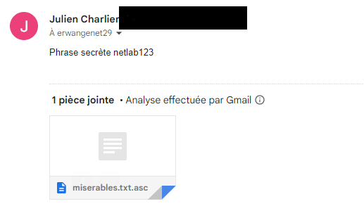
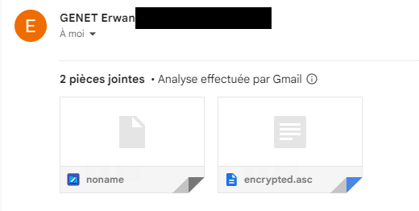
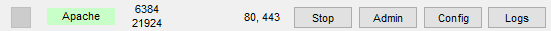
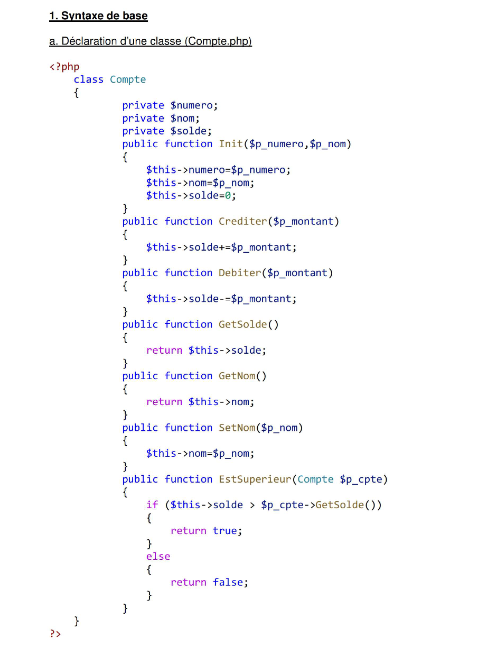

Linux-Apache-Mysql-Php
Ce projet a été réalisé en début d'année et regroupe 4 mini projets nous permettant d'apprendre et de nous familiariser avec des langages ou applications différentes et nouveau.
Linux
Afin de découvrir le système d'exploitation Linux nous avons réalisé un petit TP sur les fonctions de hachage et de cryptage en équipe de deux.
Le but de ce TP a été donc de découvrir à quoi sert une fonction de hachage et pourquoi hacher et crypter nos données.
Nous avons donc appris le hachage ainsi que ces fonctions de hachage comme le sha256, permettant de créer un hash, une donnée cryptée d'un mot de passe décryptable seulement avec sa clé privé.
Il fallait donc créer chacun par binôme une clé publique et une clé privé crypter un message avec la clé publique du destinataire qui lui décrypte avec sa clé privé, cela permet d'assurer une confidentialité du message envoyé.
Envoie du fichier crypté
Renvoi du fichier décrypté
Apache
Réalisation de plusieurs petits Sites webs en HTML grâce au logiciel Xampp afin de découvrir et se lancer dans le monde d'Apache et découvrir le monde de la programmation web. 
Mysql
Réalisation de plusieurs petits exercices en écrivant des requêtes SQL afin de découvrir MySql, en sélectionnant une partie d'une base de donnée particulière.

Ces requêtes ont ensuite été réalisé sur une base de donnée à l'aide de l'application microsoft Acesss.
PHP
Réalisation de petits codes afin de continuer à découvrir le monde de la programmation web mais ce coup-ci avec la programmation orienté objet sur le langage PHP

Une classe étant l'objet est les différentes fonctions et propriétés représente son comportement